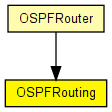

Implements OSPFRouting.

The following diagram shows usage relationships between types. Unresolved types are missing from the diagram. Click here to see the full picture.
The following diagram shows inheritance relationships for this type. Unresolved types are missing from the diagram. Click here to see the full picture.
If a module type shows up more than once, that means it has been defined in more than one NED file.
| OSPFRouter (compound module) |
An OSPFv2 router. |
| Name | Type | Default value | Description |
|---|---|---|---|
| ospfConfigFile | string |
xml file containing the full OSPF AS configuration |
| Name | Value | Description |
|---|---|---|
| display | i=block/network2 |
| Name | Direction | Size | Description |
|---|---|---|---|
| ipIn | input | ||
| ipOut | output |
// // Implements \OSPFRouting. // simple OSPFRouting { parameters: string ospfConfigFile; // xml file containing the full OSPF AS configuration @display("i=block/network2"); gates: input ipIn @labels(IPControlInfo/up); output ipOut @labels(IPControlInfo/down); }